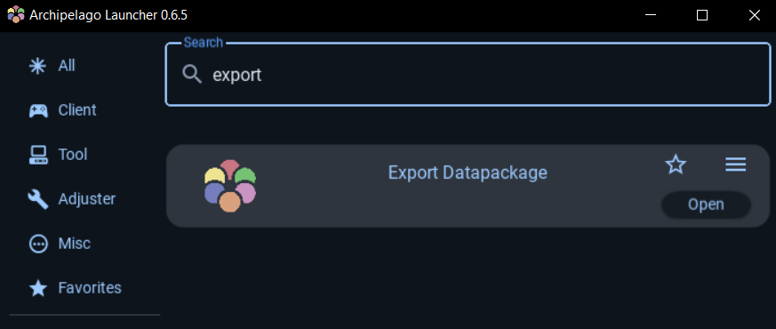

AP Icon Template Generator
Upload the datapackage file (datapackage_export.json):
How to get this file?
- Open the Archipelago Launcher.
- Run "Export Datapackage". This will run over all worlds you have installed.
- The new file should be under your AP root folder.
